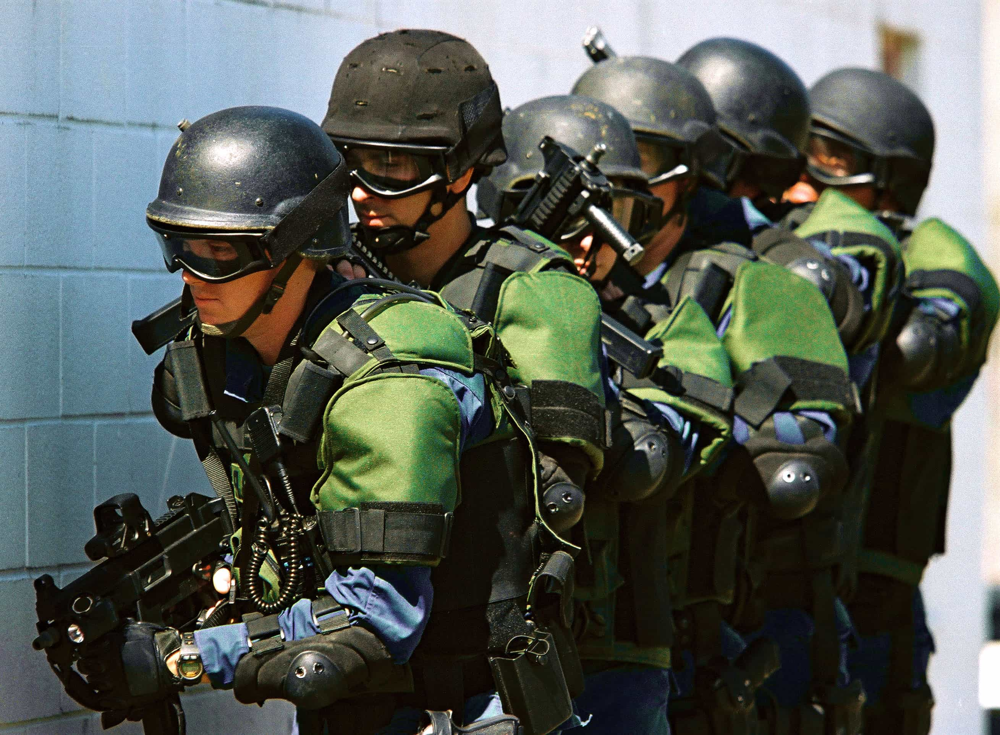
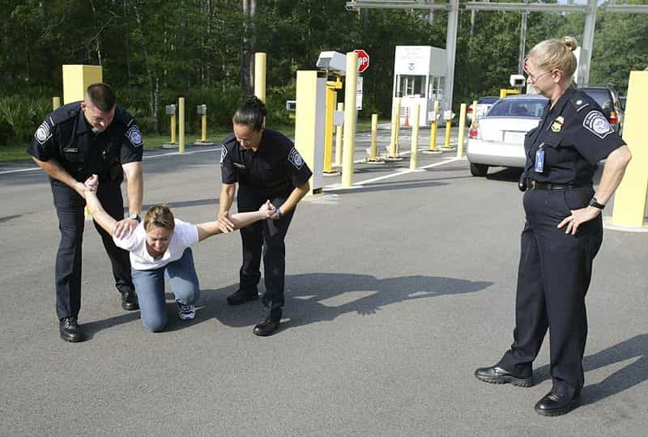
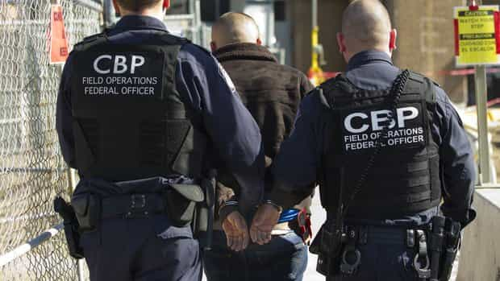
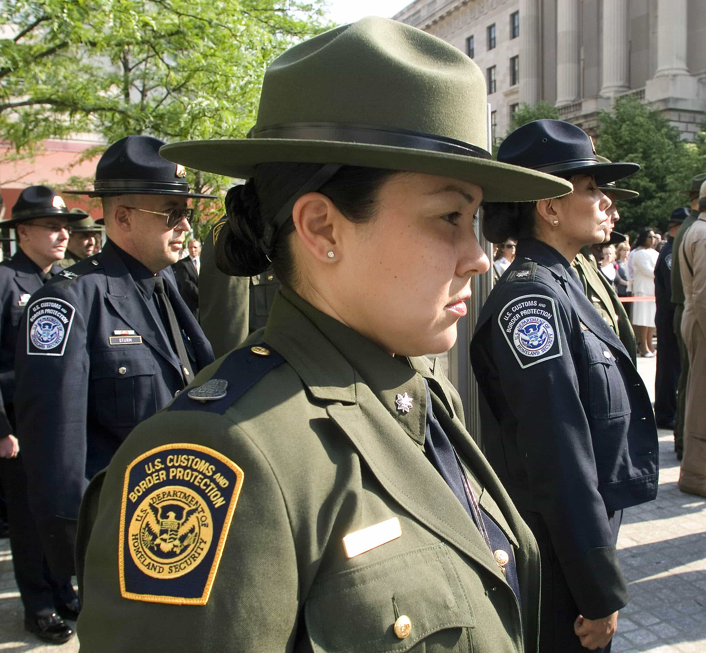

< < < Back
How To Stand Up To Abusive U.S. Customs Officials And Win – Return Of Kings
It’s a familiar ordeal for any American who’s ever traveled abroad. Every U.S. citizen with the temerity to explore lands unknown is forced into a grueling, humiliating interrogation with Customs and Border Protection (CBP) officials when they return. CBP agents treat returning Americans like criminal defendants, grilling you on everything from what you did abroad to where you’re staying in the U.S. (despite the fact that since you’re a citizen, where you live is none of their business). Even Americans who cross into Canada by car are subjected to warrantless searches of their cars and computers when they come back.
The ostensible purpose of this police state thuggery—protecting Americans from terrorism and criminality—is a total joke. Consider that CBP was completely unable to stop a Liberian national with Ebola from entering the country and infecting everyone he came into contact with. The reality is that U.S. customs is staffed by incompetent goons who only care about lording their power over the little people. Rent-a-cops on the public payroll. The CBSA (Canadian Border Services Agency) is run by the same kinds of dweebs: CBSA personnel usually end up there because they failed to qualify for either the military or the RCMP.
But you don’t have to take their abuse. Here’s how to assert your rights as a U.S. citizen in the face of fascism.

You Have The Right To Remain Silent
CBP officials have far less power over U.S. citizens than you think. The only questions of theirs that you are required to answer are ones pertaining to establishing your citizenship. By showing them your passport, you are fulfilling this requirement. You’re also required to hand in a written customs declaration indicating any items that you acquired while abroad. That’s it. You do not have to cooperate with customs officials beyond this. You don’t even have to answer the “Business or pleasure?” question, seeing as you’re already required to do that on your declaration form.
Granted, like all petty dictators, CBP thugs will make your life hell if you dare to defy their “power.” Therefore, when it comes to reminding a customs commissar of your rights, answer their questions with this:
I decline to answer your questions.
This is how you draw a line in the sand. If the official presses you, inform them that you know your rights as a U.S. citizen and that you don’t have to answer their questions.
Now, even if you refuse to be interrogated, you still need to comply with CBP’s physical requests. For example, if an official tells you to go somewhere or do something, don’t argue, just do it. What you are not obligated to do is answer their invasive and rude questions. While you may be held in “Secondary” for the “crime” of not submitting to authoritarian abuse, CBP will eventually have to release you, because federal and international law prohibits them from denying U.S. citizens re-entry.

Why Defy Customs Officials?
Because asking those questions is how CBP finds suckers to throw in prison. The average customs official is Dwight Schrute with a badge, completely incompetent at his job, as the Thomas Eric Duncan case shows. Because they have no clue how to catch real criminals, CBP officials seek to arrest law-abiding U.S. citizens to meet their monthly quotas.
By answering these seemingly innocuous questions, you are giving CBP the rope by which they will hang you. Customs officials are not your friends, they are police officers who are trained to identify criminals (even if they’re terrible at it). Even if you are completely honest, an officer can trip you up with redundant questioning, you might forget certain details, or the officer might just outright make shit up. Even if you can beat the charges in court, the process is the punishment: merely having to defend yourself against a bogus charge will drain your time, energy and finances.
The only way to protect yourself from corrupt border commissars is to refuse to answer their questions. By reminding them of your right to remain silent, you deny them ammunition to use against you.
Furthermore, the principle of living in a free society is antithetical to the abusive, harsh treatment U.S. customs officials mete out to their own countrymen. The foundation of Anglo-American law is Blackstone’s formulation, the idea that it is better to let the guilty go free than to punish even one innocent. Even if CBP’s methods were effective in apprehending terrorists, drug smugglers, child molesters and other criminals, they would still be immoral and wrong.
And don’t give me some argument about how the poor, suffering customs agents are “just doing their jobs.” As much as I hate to Godwin this article, that excuse didn’t fly at Nuremberg and it won’t fly now. If you willingly participate in evil acts, you are morally culpable regardless of your motivations. If the “good” CBP officers don’t want to be blamed for the excesses of their colleagues, they can either work to change the system from within or get another job.

Give Me Liberty, Unless It Inconveniences Me
Some people will no doubt protest this post by saying “It’s just a couple of questions, I don’t get why you’re making a big deal about it!” or “What about all the people in the line behind you that you’ll be holding up?”
Are you serious? Our Founding Fathers fought a revolution to be free of foreign tyranny and you’re telling me you can’t be bothered to expend the slightest bit of effort to maintain the rights they won for you? “Well, gosh darn it, I’d sure love to fight the police state, but not if I have to miss the new episode of Pawn Stars!”
Newsflash: if you’re not willing to defend your rights, you don’t deserve to have them. It’s this kind of apathy that has aided the American police state. Back when the first TSA regulations were being implemented after 9/11, people justified them by saying that “It’s just a little extra screening, it’s no big deal!” and “If you’re not a criminal, you have nothing to fear.” More than a decade later and not only is the TSA still around, they now get to grope you, shoot X-rays into your body, and confiscate your contact lens solution for being too big.
If more Americans were willing to say no to government abuse, the police state would lose all of its power overnight. You can be a cowardly sheep if you want, but I’m not going to give up my freedom without a fight. Your willingness to get raped in the ass doesn’t require me to drop trou and grease up along with you.
The Land Of The Cowardly And The Home Of The Slave
Some government shills commenters will no doubt claim that foreign immigration officers are far more abusive. Again, this is a lie.
I spent the past three months in the Philippines. When I landed in July, the immigration officer asked me a grand total of one question—“How long are you staying?”—before stamping my passport. I then collected my suitcase from baggage claim and handed in my customs declaration. The process took all of fifteen minutes.
Coming back to the U.S., my carry-on bag was flagged by both Philippine and Japanese airport security because of a metal microphone I was carrying. Not only were the officers courteous when they searched my bag, they actually helped me put it back together when they were done. In contrast, when I was departing from Chicago last week, the TSA official at O’Hare who searched my bag accused me of having a gun, refused to help me clean up the mess he’d made, and yelled at me for not being able to get my things off his table fast enough.
The reality is that only the U.S. and Canada—supposedly free, first-world countries—feel the need to treat travelers like international fugitives. For example, my friend told me about how when she and her husband took a trip to Niagara Falls recently, they made a wrong turn while driving and ended up on the border crossing to Ontario. Rather than let them turn around and go home (as was possible up until a couple of years ago), the customs agents forced them to get in line to seek entry. Because her husband forgot his passport (because they weren’t planning on crossing the border), the Canadians arrested and interrogated them for hours before letting them leave.

The Fight For Liberty Begins With You
Freedom is not a privilege granted by the government, but the product of the actions and beliefs of a people. If you’re not willing to fight for your rights, the forces of tyranny will strip them from you, one humiliating interrogation and patdown at a time. Want to prove you’re serious about keeping America a free nation? Start by refusing to submit to the vagaries of the police state. Each little act of disobedience will make the world a better place.
Read More: The Frenchman Who Took A Stand Against Socialism